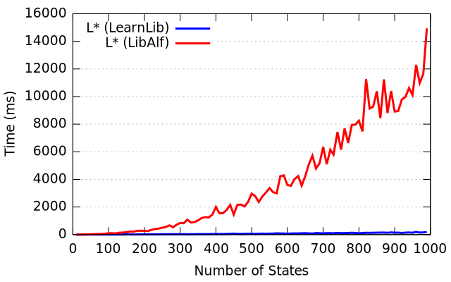
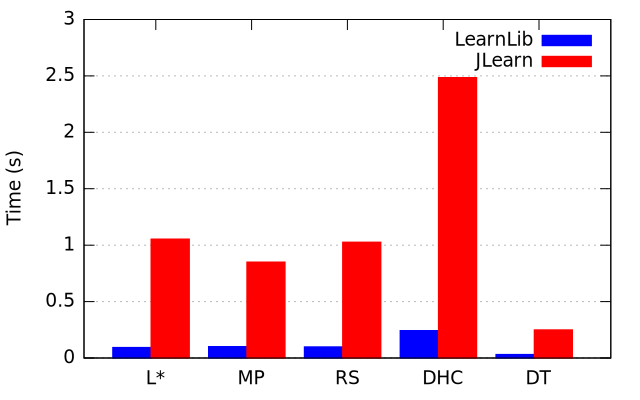
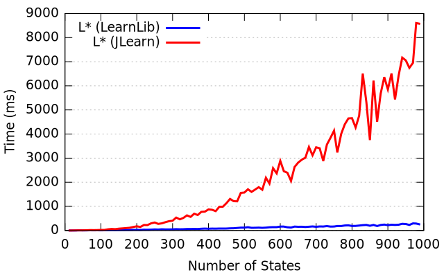

The open-source LearnLib has been designed with a particular emphasis on scalability and high performance. When using comparable algorithms, it outperforms both the previous, closed-source LearnLib (a.k.a. JLearn) as well as LibAlf, an automata learning library written in C++. The concrete speed-up depends on the algorithm, the alphabet size, and the model size. Furthermore, it is highly non-linear (see below). As a result, on “big” models the new LearnLib can be several orders of magnitude faster than the aforementioned other libraries.
Apart from these performance gains attained by clever engineering, the open-source LearnLib features novel algorithms (such as the TTT algorithm), which may significantly reduce the number of membership queries during learning.
Let us now take a brief look at how LearnLib’s algorithms perform against their counterparts from LibAlf and JLearn. Note that, since LibAlf only supports DFA learning and JLearn only supports Mealy machine learning, a direct three-way comparison cannot be conducted fairly, which is why we consider each of these libraries separately. Also, due to other specifics of the libraries, different experimental setups appear fair. More information on this can be found here (LibAlf) and here (JLearn).
LibAlf
When looking at the classic L* algorithm for learning DFAs, the version provided with LearnLib has a non-constant speedup over LibAlf’s version (left). The same applies to the Kearns/Vazirani algorithm with binary search, which in general appears to be the fastest algorithm shipped with LibAlf (middle). For moderately sized systems (500 states, 10 input symbols), every algorithm in LearnLib is several orders of magnitude faster than the equivalent LibAlf version (right).
|
 |
 |
 |
| Performance comparison between LearnLib (blue) and LibAlf (red). Left: performance characteristics of L* versions (alphabet size = 10). Middle: performance characteristics of Kearns/Vazirani with binary search versions (alphabet size = 10). Right: performance of comparable learning algorithms (automaton size = 500, alphabet size = 10). Click on an image to enlarge. | ||
{kind=link}
{kind=link}
A more detailed comparison between the open-source LearnLib and LibAlf can be found here.
JLearn (Closed-Source LearnLib)
Even though the closed-source LearnLib (a.k.a JLearn) already offered good performance, the open-source version constitutes a substantial improvement in this regard. Although smaller than in the LibAlf case, the speedups gained by the open-source LearnLib are still very impressive. Again, there is a non-constant speedup when, e.g., looking at the L* algorithm (left). Of all considered algorithms, the Discrimination Tree/Observation Pack algorithm (middle) is the fastest algorithm in both versions of LearnLib, and the spread is visibly smaller. Nevertheless, for moderately-sized systems, JLearn provides a speedup of at least 8-10x when using the same algorithm (right).
|
 |
 |
|
| Performance comparison between LearnLib (blue) and JLearn (red). Left: performance characteristics of L* versions (alphabet size = 10). Middle: performance characteristics of Discrimination Tree (Observation Pack) versions (alphabet size = 10). Right: performance of comparable learning algorithms (automaton size = 500, alphabet size = 10). Click on an image to enlarge. | ||
{kind=link}
A more detailed comparison between the open-source LearnLib and JLearn can be found here.